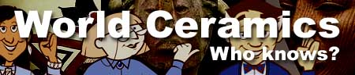
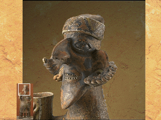

|  | |
|  |
This female figure is not meant to be REALISTIC. She is a CARICATURE. As an artist I am very familiar with how the body and FACIAL FEATURES look in real life. Here, the artist has EXAGGERATED the FEATURES. The nose and ears are enormous. Notice the long neck and pointy chin. Look closely and you'll see that the mouth seems to be grinning. Nayarit sculptures of people include jewelry and body decoration. |